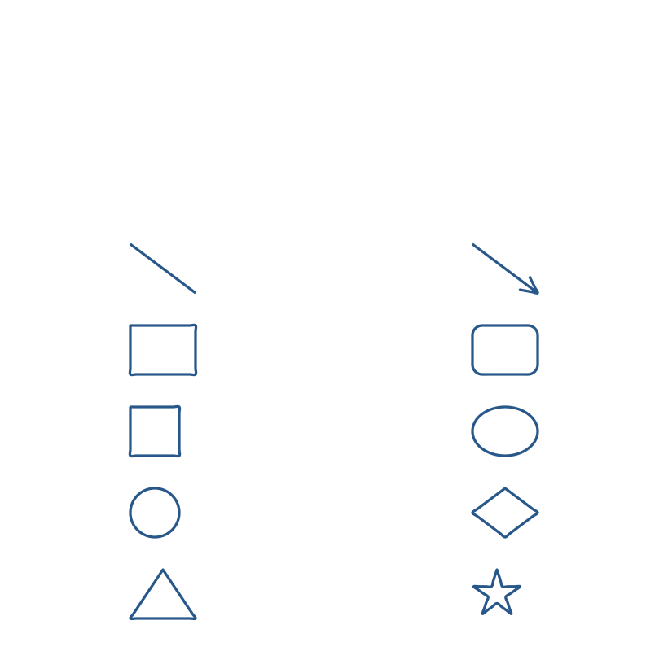

Scegli una forma nella scheda Disegno, poi trascina sulla pagina. Ogni forma è un tratto modificabile. Selezionala per spostarla o ridimensionarla, oppure usa Annulla tratto per rimuoverla.
Le dieci forme sono disposte nello stesso ordine a due colonne del gruppo Forme.
| Sinistra | Destra |
|---|---|
| Linea | Freccia |
| Rettangolo | Arrotondato |
| Quadrato | Ellisse |
| Cerchio | Rombo |
| Triangolo | Stella |
Avanti: Scrittura a mano e disegno.
